イベントでしかけを作ろう 〜コインとスコア〜
🎯 この章でできるようになること
- 「条件 → アクション」のイベントを自分で組み立てられる
- キーに合わせて、キャラの向きを左右に変えられる
- 変数（数を覚えておく箱）を使って、スコアを数えられる
- コインを取るとスコアが増えて、画面に表示されるしくみを作れる
※ 前回のステージが開けない・壊れてしまった人は、第1章「1-5〜1-7」と第2章「2-5」をやり直せば、この章に必要な最低限の状態になります。
困ったら講師を呼んでね。
3-1. イベントのしくみをもう一度
前回、条件なしのイベントでカメラを動かしました。
今回は条件つきのイベントを作ります。
イベントは「もし〜なら（条件）、〜する（アクション）」という、ゲームのルールそのものです。
3-2. ウォーミングアップ: キャラの向きを変えよう
今のPlayerは、左へ走っても右を向いたままのはず。
最初のイベントとして、押したキーの方向を向くようにしてみよう。
Stage1 (Events) タブを開き、「Add a new event」で新しいイベントを追加します。
今度は左側の「Add condition」を押して、検索欄に key pressed と入力。
「Key pressed」（キーが押されている、Input ＞ Keyboard）を選びます。
「Key to check」（調べるキー）の欄に Left と打つと候補が出るので、Left（左矢印）を選んで「Ok」。
すぐ下の「Key just pressed」（押した瞬間だけ）とまちがえないように注意。
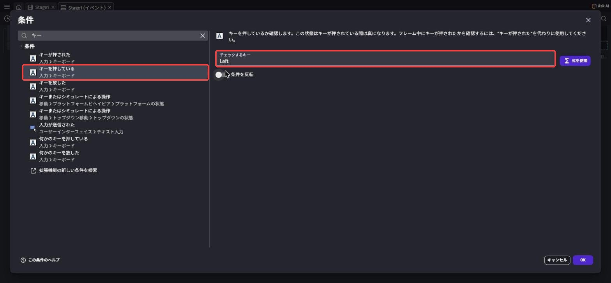
同じイベントの右側「Add action」を押して、flip と検索。
「Flip the object horizontally」（左右に反転する）を選び、Object に Player を選びます。
「Activate flipping」（反転する？）を Yes にして「Ok」。
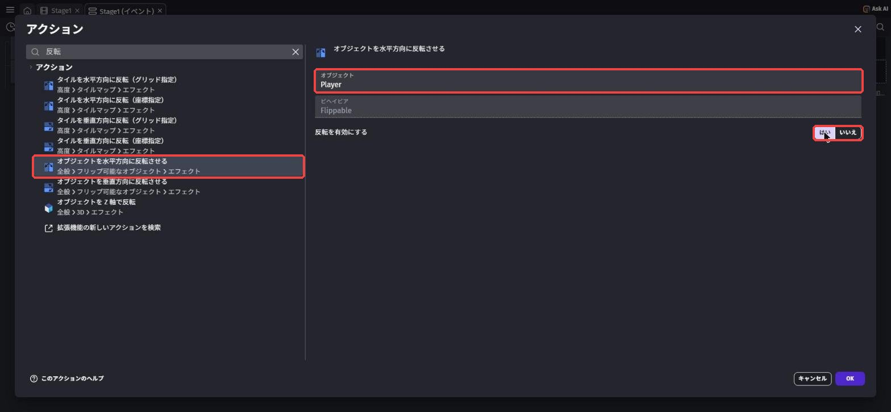
同じようにもう1つイベントを作ります。
今度は条件を「Key pressed: Right」、アクションを「Flip the object horizontally: Player を No」にします。
2つのイベントが次のようになっていればOK。
LeftPlayer horizontally: YesRightPlayer horizontally: No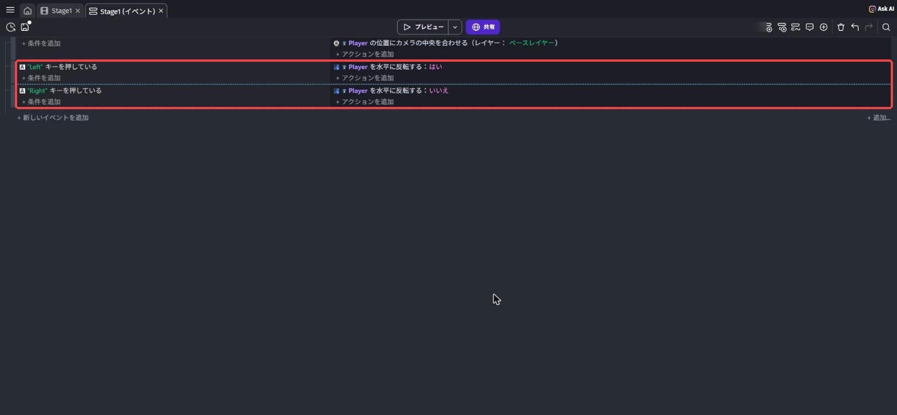
Previewで、左右に走ると向きが変わるか確かめよう。
もし逆向きになったら、キャラの絵がもともと左を向いているということ。
そのときは Yes と No を入れかえればOK。
3-3. コイン（Coin）を置こう
シーンエディタに戻り、オブジェクトパネルの「＋」からアセットストアで coin と検索します。
この教科書では「Gold Coin」を使い、置いたあとに W と H を 40 にしています。
好きなコイン（宝石や果物などでもOK）を追加して、名前を Coin にしよう。
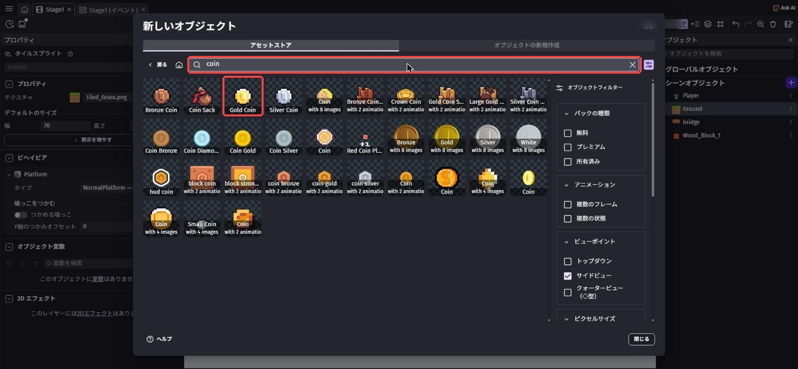
右クリック →「Duplicate」で、ステージのあちこちにコインを置こう。
Coin にはビヘイビアをつけません（足場ではないので、すり抜けてOK）。
取りやすい場所にたくさん、ジャンプが必要な場所に少し、と置き分けると楽しいよ。
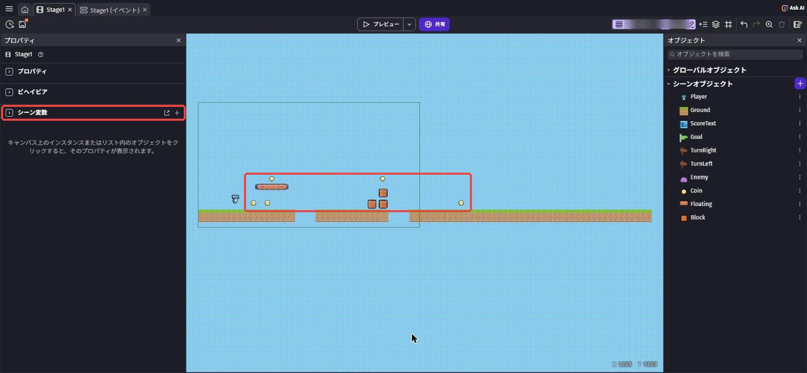
3-4. 変数でスコアを数えよう
コインを何枚取ったかを数えるには、数を覚えておく場所が必要です。
それが変数です。
今回は
Score という名前の箱を作って、コインを取るたびに中の数を1ずつ増やしていく。シーンの中で使う変数を「シーン変数」と呼ぶよ。
コインを取るたびに、箱の中の数を1ずつ増やす
シーンエディタで何も選んでいない状態にすると、左のプロパティに「Scene Variables」（シーン変数）が出ます。
その右にある「↗」（別の画面で開く）のボタンを押すと、「Stage1 variables」の画面が開きます。
シーンの何もない場所を右クリック →「Open scene properties」→「Edit scene variables」からでも開けます。
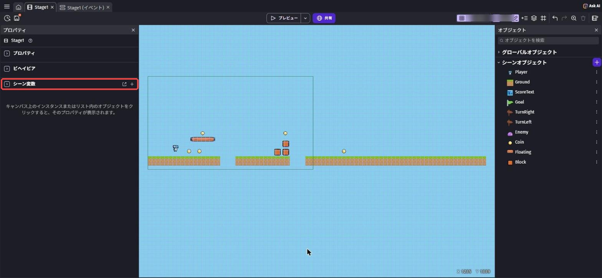
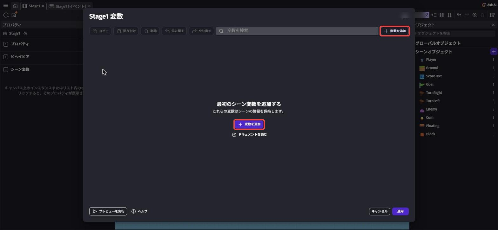
「Add a variable」（変数を追加）を押すと、1行目に変数ができます。
名前を Score に変えます。
種類が Number（数）、値が 0 になっていることを確かめて、右下の「Apply」を押そう。
名前は大文字・小文字も区別されます。
Score と score は別の箱になってしまうので注意しよう。
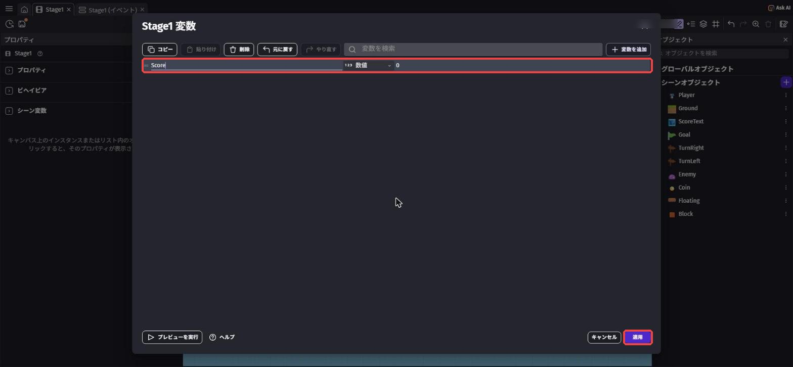
3-5. コインを取るイベントを作ろう
イベントシートで「Add a new event」→「Add condition」を押して、collision と検索。
「Collision」という名前がいくつも出てきます。
下に「General ＞ Objects ＞ Collision」と書いてある「Collision」（さわっている・ぶつかっている）を選ぼう。
1つ目の Object に Player、2つ目の Object に Coin を選んで「Ok」。
「Physics Engine」と書いてあるものは、物理エンジン用の別の条件なので選ばないでね。
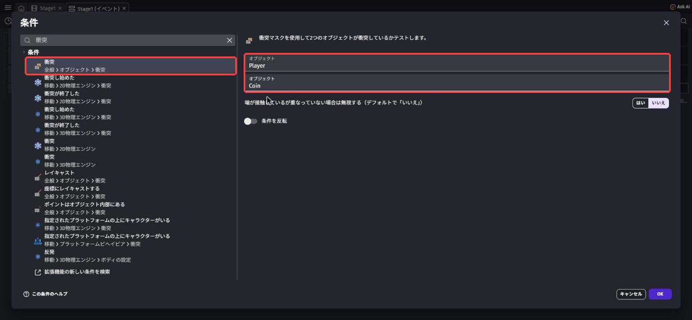
右側の「Add action」→ delete と検索して「Delete the object」（オブジェクトを消す）を選び、Object に Coin を選んで「Ok」。
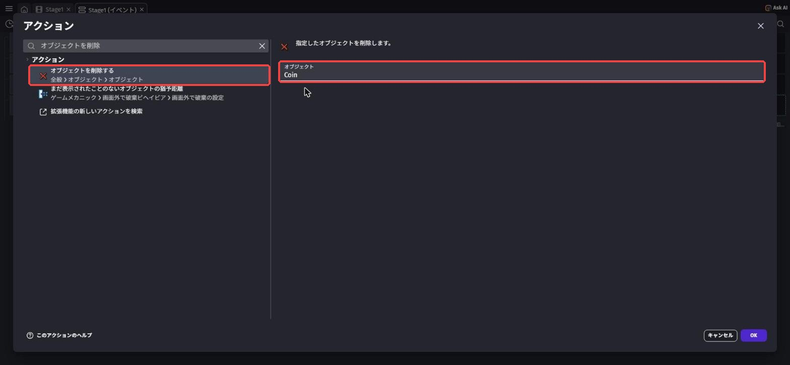
同じイベントの右側で、もう一度「Add action」を押します（アクションは1つのイベントにいくつでも足せる）。
variable と検索して、「Change variable value」（変数の値を変える、General ＞ Variables）を選びます。
「Variable」に Score、「Modification's sign」（計算のしかた）に「+ (add)」（足す）、「Value」に 1 を入れて「Ok」。
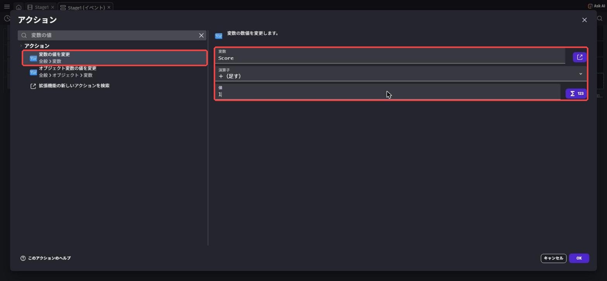
Player is in collision with CoinCoinChange
Score: + 1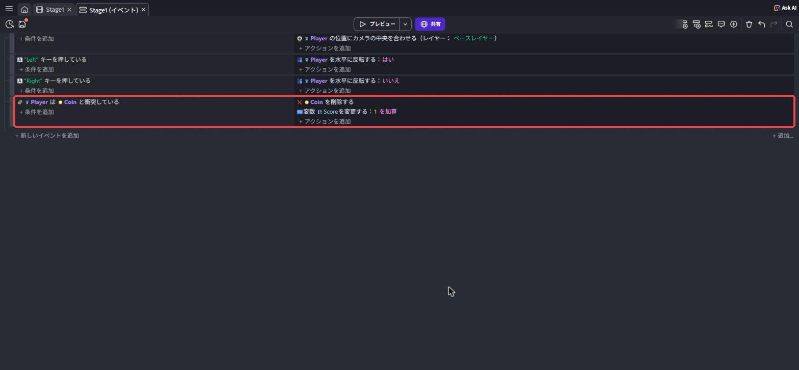
そのあとのアクション「Coinを消す」は、選ばれたCoinにだけ効く。
だから、ステージ中のコインが全部消えたりしないんだ。
3-6. スコアを画面に表示しよう
オブジェクトパネルの「＋」を押して、上のタブを「New object from scratch」（一から作る）に切り替えます。
検索欄に text と入れて、いちばん上の「Text」（Displays a text on the screen.）を選びます。
「Edit」の画面が開いたら、「Object name」を ScoreText にします。
「Size」（文字の大きさ）を 36 くらいにして「Bold」（太字）にチェックを入れると見やすいよ。
「Apply」で閉じたら、シーンの左上あたりに置こう。
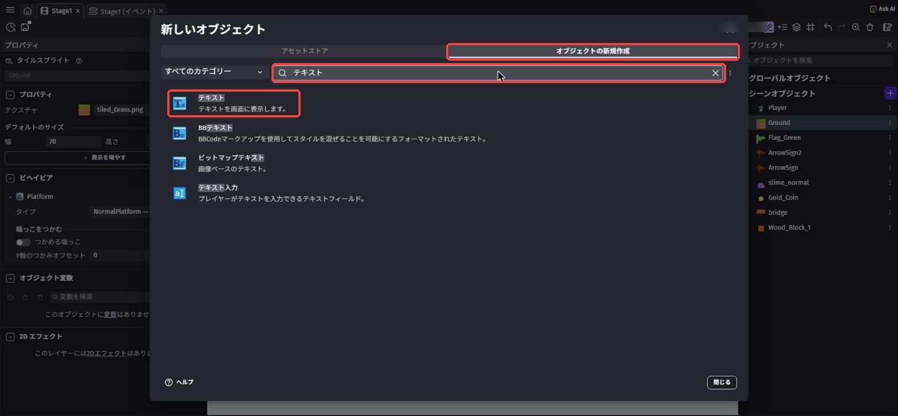
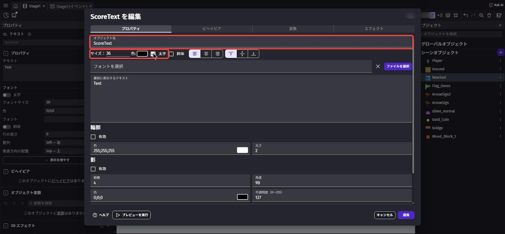
このままだと、カメラが動いたときに ScoreText は置き去りにされてしまいます。
そこで、カメラが動いても画面に貼りついたままの層、レイヤーを作ります。
画面の右上のボタンの列にある、紙が重なったマークのボタンを押すと、右下に「Layers」（レイヤー）のパネルが開きます。
パネルの右上の「＋」で新しいレイヤーを追加し、名前を UI にしよう。
「UI」が「Base layer」（最初からあるレイヤー）より上に並んでいればOK。
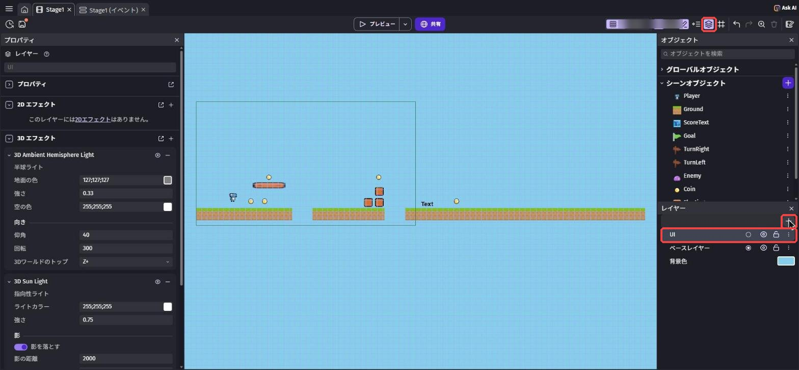
シーンに置いた ScoreText をクリックして、左のプロパティで「Base layer」と書いてある欄（レイヤー）を UI に変えます。
ついでに X を 24、Y を 20 にすると、画面の左上にぴったり表示されます。
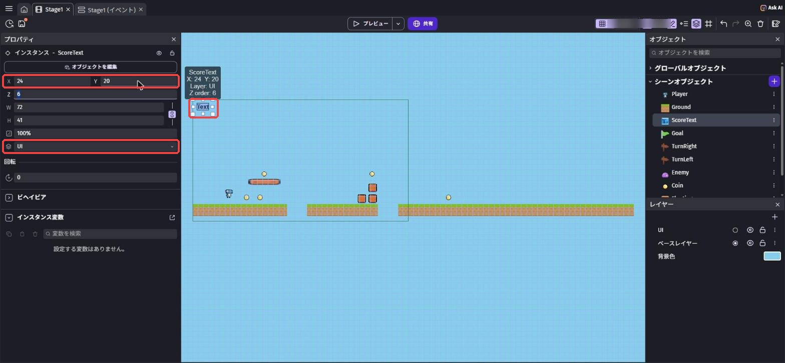
ステージは下のシート、スコアは上のシートに描くイメージ。
カメラを動かすイベントは下のシート（最初からあるレイヤー）だけを動かすので、UIレイヤーのスコアは画面の同じ場所に表示され続けるよ。
イベントシートに戻って「Add a new event」。
条件はなし（いつでも・ずっと）で、「Add action」を押します。
検索するより、左の一覧（Scene objects）で ScoreText をクリックするほうが早いよ。
ScoreText で使えるアクションが並ぶので、いちばん上の「Text」（文字を変える）を選びます。
「Modification's sign」（変え方）が「= (set to)」（〜にする）になっていることを確かめます。
「Text」の欄には、次の式をそのまま入力して「Ok」を押そう。
"Score: " + ToString(Score)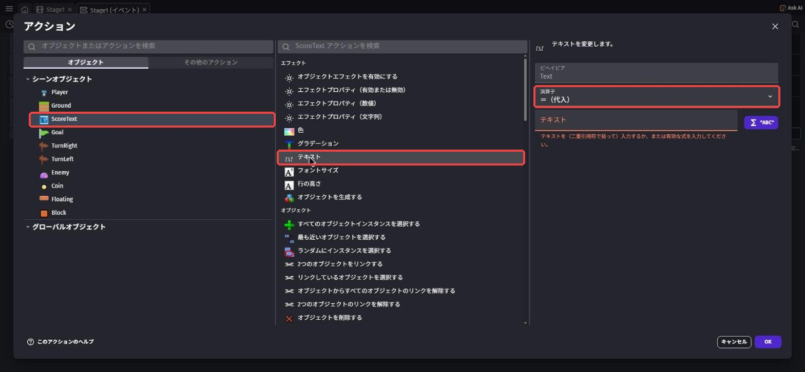
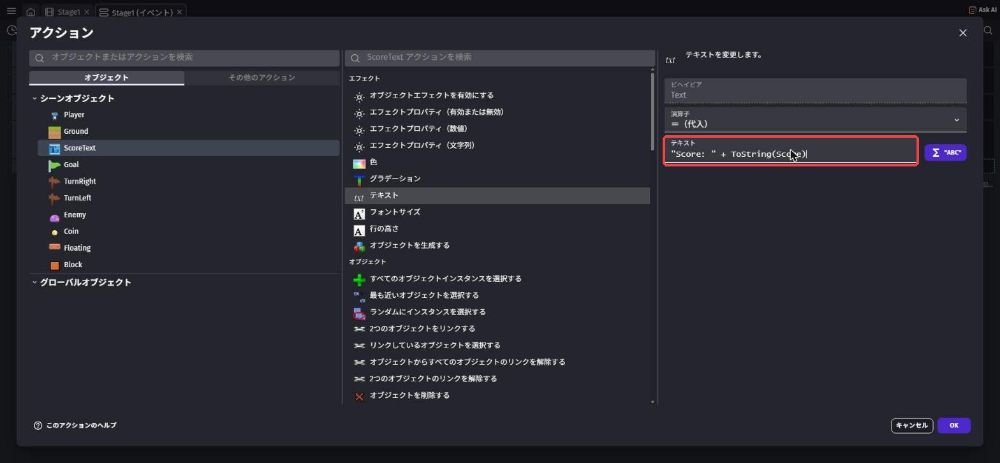
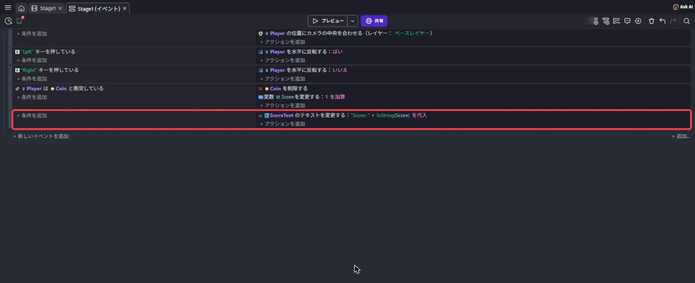
| 式の部分 | 意味 |
|---|---|
"Score: " | 「"」でかこんだ部分は、そのまま表示される文字 |
+ | 文字と文字をつなげる |
ToString(Score) | 変数 Score の数を、表示できる文字に変換する |
ScoreText: set to "Score: " + ToString(Score)コインを取るたびにコインが消えて、左上の数字が1ずつ増えれば大成功！
Ctrl + S⌘ + S で保存しよう。
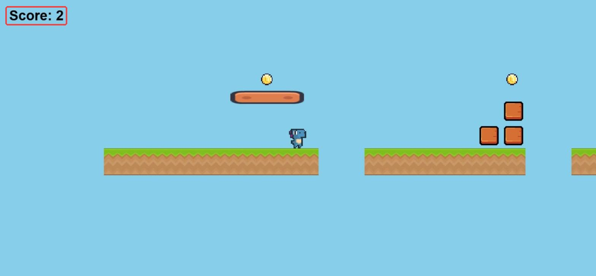
3-7. 💪 やってみよう
課題1: スコアの見た目を変えよう
ScoreText を選んで、プロパティや設定画面から文字の大きさ・色を変えてみよう。
背景の色に負けない、見やすい色にできたら合格。
ヒントを見る
ScoreText をダブルクリックすると、文字の大きさ（size）や色（color）を変える欄があるよ。
暗い背景には明るい文字、明るい背景には暗い文字が見やすい。
課題2: 大きいコインで5点もらえるようにしよう
別の素材で BigCoin というオブジェクトを作り、取ると Scoreが5 ふえるようにしよう。
むずかしい場所に置くと、取りに行きたくなるよ。
ヒントを見る
3-5で作ったコインのイベントと、ほとんど同じものを作ればOK。
ちがうのは「どのオブジェクトにさわったか」と「いくつ足すか」の2か所だけ。
イベントを右クリックしてコピー＆貼り付けし、中身を書きかえるとラクだよ。
課題3（チャレンジ）: コインを全部取ったらメッセージを出そう
ステージのコインを全部取ったら、ScoreText の文字が「ALL COINS!」に変わるようにしてみよう。
ヒントを見る
条件の検索で number と入れると、「シーンにあるオブジェクトの数」を調べる条件が見つかるよ。
Coin の数が 0 になったら……という条件にしてみよう。
イベントは上から順に実行されるので、スコア表示のイベントより下に置かないと、すぐ上書きされてしまうよ。
3-8. 🚨 つまずきポイント集
コインにさわってもスコアがものすごい勢いで増える
原因: 「Coinを消す」アクションがない。
コインが消えないので、さわっているあいだ毎フレーム（1秒に何十回も）+1されている。
直し方: 同じイベントに「Delete the object: Coin」が入っているか確認しよう。
スコアの表示が変わらない・「Score:」すら出ない
原因1: 式の打ちまちがい。
→ "（ダブルクォーテーション）が半角か、ToString のつづりと大文字・小文字が合っているか確認しよう。
式の欄が赤くなっているときは、どこかがまちがっているサイン。
原因2: 変数の名前がちがう。
→ シーン変数の名前が Score（Sが大文字）になっているか確認しよう。
スコアの文字が、走るとどこかへ行ってしまう
原因: ScoreText が UI レイヤーに入っていない。
直し方: シーンに置いた ScoreText を選んで、プロパティの Layer が UI になっているか確認しよう。
キャラの向きが逆になる
原因: キャラの絵が、もともと左を向いている。
直し方: 3-2の2つのイベントで、Yes と No を入れかえよう。
コインにさわっても何も起きない
原因: 条件で選んだオブジェクトがちがう（Coin ではなく別のものになっている）。
または、イベントを左右逆（条件とアクションを入れちがえ）に作っている。
直し方: イベントの文をダブルクリックして、中身を確認しよう。
左が「Player is in collision with Coin」、右が「Delete Coin」になっていればOK。
💡 15分たっても直らないときは、次の「AIを味方につけよう」の方法で相談してみよう。
3-9. 🤖 AIを味方につけよう
イベントの相談をするときは、イベントシートの中身を、上から順番に「条件／アクション」の形で書き写すのがコツ。
画面の写真だけより、ずっと正確に伝わります。
この章でのAIの使い所
✅ 良い使い方 — 自分で15分考えてわからなかったら聞く
- 式の意味を知りたいとき:
ToStringや+の働きを、自分の言葉で説明できるまで聞く - イベントのバグ探し: 書き写したイベントを見せて、どこがおかしいかヒントをもらう
そのままコピペで使えるプロンプト（AIへの指示文）の例:
イベントは次のとおりです。
イベント1: 条件「Player is in collision with Coin」／アクション「Change Score: + 1」
コインにさわるとスコアがすごい勢いで増えてしまいます。
答えをそのまま言わずに、原因に気づけるヒントをください。
特に、なぜ ToString が必要なのかを教えてください。
🚫 やめておこう
- 課題のイベントをAIに全部作らせて、そのまま写す（自分で組み立てる練習がこの章のゴール！）
- AIの答えを試して確かめずに信じる（AIは古いGDevelopの書き方を答えることがある。
アクションの名前や式は、必ず自分の画面で確認）
3-10. ✅ チェックリスト
全部チェックできたら第3章クリア！
🎉 次回は、いよいよ敵が登場。
踏んだら倒せる・横から当たったらやり直し、というゲームらしいルールを作るよ。
3-11. 📚 もっと知りたい人へ
- 公式プラットフォーマーチュートリアル Part 5「Add Collectible Coins」（英語） — コイン集めの公式手順
- シーン変数の解説（公式Wiki） — 変数の作り方・使い方の公式説明
- 式（Expressions）の解説（公式Wiki） — ToString など、式の書き方がまとまっている